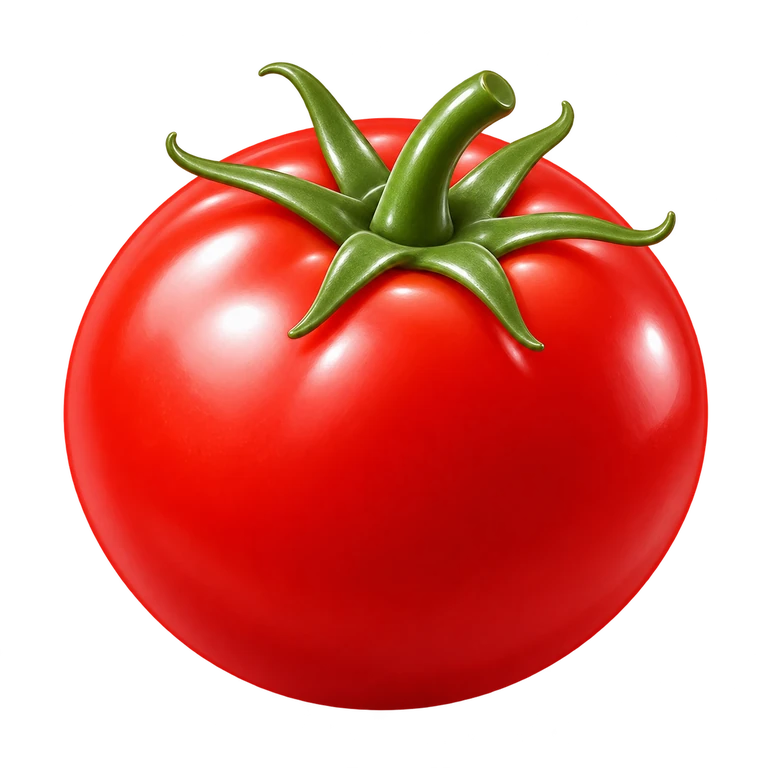
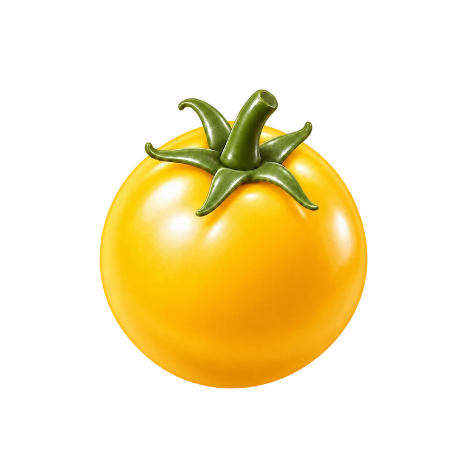

Tomato icons, side by side
The yellow cherry tomato is shown at about one-third of the normal tomato's visible width.

Normal tomato
Red · full size

Cherry tomato
Yellow · smaller
At app size
Each image is shown in the same 64 px box.
Normal
Cherry